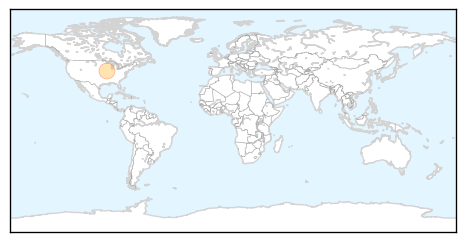
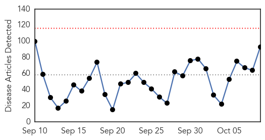
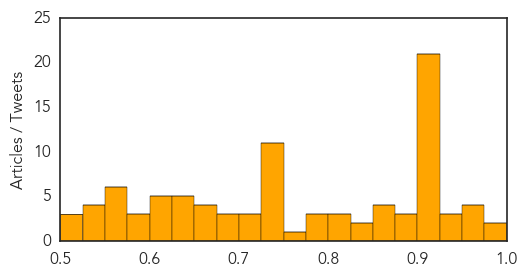

Mumps
30-Day Web Trend
0 alerts, 2 warnings

30-Day Twitter Trend
1 alerts, 0 warnings

Article Locations
Article Confidences

Top Articles:
Top Tweets:
-
No tweets found for Oct 09, 2015
Unknown
30-Day Web Trend
0 alerts, 0 warnings

30-Day Twitter Trend
2 alerts, 0 warnings

Article Locations

Article Confidences
Top Articles:
- 0.990
- Hundreds get flu shots at Waynesboro drive-thru
- 0.982
- Thailand: Second MERS case suspected
- 0.968
- EV-D68: Will Last Year's Outbreak Be Repeated?
- 0.966
- Second suspected MERS case in Thailand
- 0.965
- RI Health Department launches flu vaccine campaign
- 0.964
- Second Mers case in Thailand in two days suspected
- 0.946
- Delaware health officials offer free flu shots [video] — NewsWorks
- 0.929
- Viral fever outbreak grips Mugu village
- 0.927
- Norovirus in Washoe County: know the signs, observe the protocol
- 0.924
- Del. begins 2015-16 flu shot campaign
- 0.918
- Report Elk Hoof Disease to Oregon Department of Fish and Wildlife Website
- 0.917
- Chicago Tribune
- 0.917
- Chicago Tribune
- 0.917
- Chicago Tribune
- 0.917
- Chicago Tribune
- 0.917
- Chicago Tribune
- 0.917
- Chicago Tribune
- 0.917
- Chicago Tribune
- 0.917
- Chicago Tribune
- 0.917
- Chicago Tribune
- 0.917
- Chicago Tribune
- 0.917
- Chicago Tribune
- 0.917
- Chicago Tribune
- 0.917
- Chicago Tribune
- 0.917
- Chicago Tribune
- 0.917
- Chicago Tribune
- 0.917
- Chicago Tribune
- 0.917
- Chicago Tribune
- 0.917
- Chicago Tribune
- 0.917
- Chicago Tribune
- 0.892
- Bird Flu Expected to Wane in U.S. as Weather Warms
- 0.889
- Health on alert for waterborne diseases
- 0.882
- 9 cases of suspected HFMD in Isabela
- 0.872
- Teen who lost leg to flesh-eating bacteria will undergo 10th surgery
- 0.859
- Salmonella major killer of young children in Africa
- 0.850
- Doctors say Egyptian government ignoring virus outbreak
- 0.850
- Chula Vista student with flesh-eating bacteria undergoes 10th su
- 0.831
- UNICEF and WHO ready to support immediate polio vaccination campaign in Ukraine
- 0.826
- Norovirus hits historic New York hotel
- 0.820
- Another death linked to cucumber salmonella outbreak
- 0.816
- State awaiting results of tests from Oxford fairgrounds as it investigates 2 E. coli cases
- 0.815
- Another death related to cucumber salmonella outbreak
- 0.799
- Report on Alzheimer’s spread misinterpreted
- 0.789
- Two toddlers infected by same strain of E. coli, Maine CDC reports
- 0.780
- We must reduce infant mortality rates
- 0.774
- Mexico captures the pilot that allegedly helped Joaquin “El Chapo ” Guzman escape
- 0.744
- Bluetongue disease hits deer in Eureka area
- 0.727
- US to overhaul troubled Syria rebel training programme
- 0.727
- UN proposes plan for unity govt to Libya's rival factions
- 0.727
- World hails Tunisia's 'inspiring' Nobel Peace laureates
Showing top 50 articles...
Top Tweets:
- 0.649
- RT: Retombées de la démission de Néhémy Joseph au CEP ! Isabelle Papillon en Haiti Liberté http://t.co/K5ni7hBEC5
- 0.632
- Colón debió llegar un 15...este feriado en 12 es malísimo!
- 0.533
- La próxima Estrategia Regional y Plan de Acción de malaria esta en el processo de elaboración http://t.co/zWwshrQArx